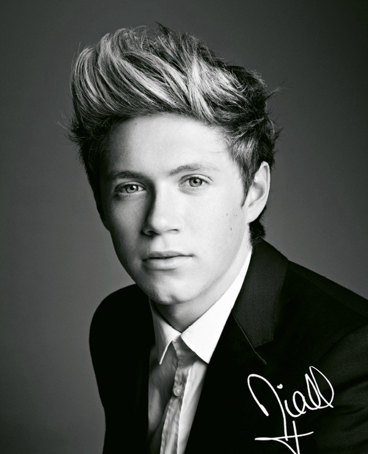
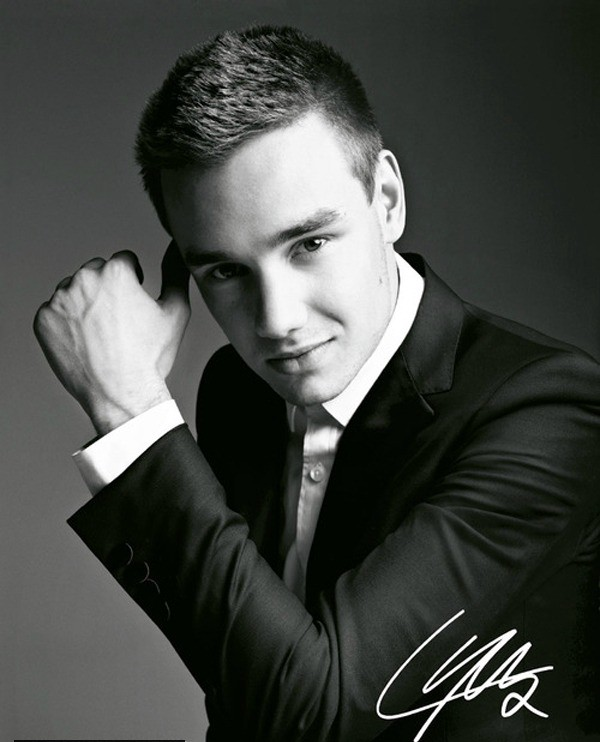
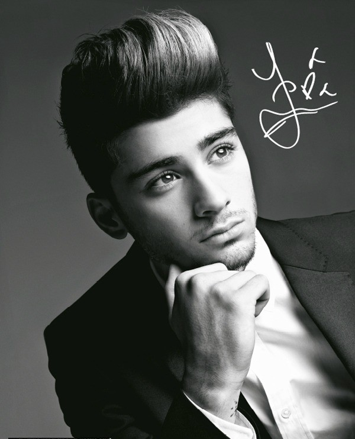
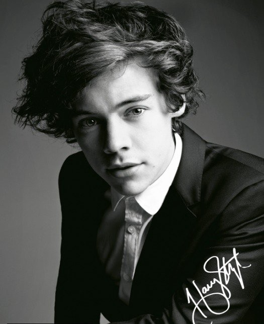
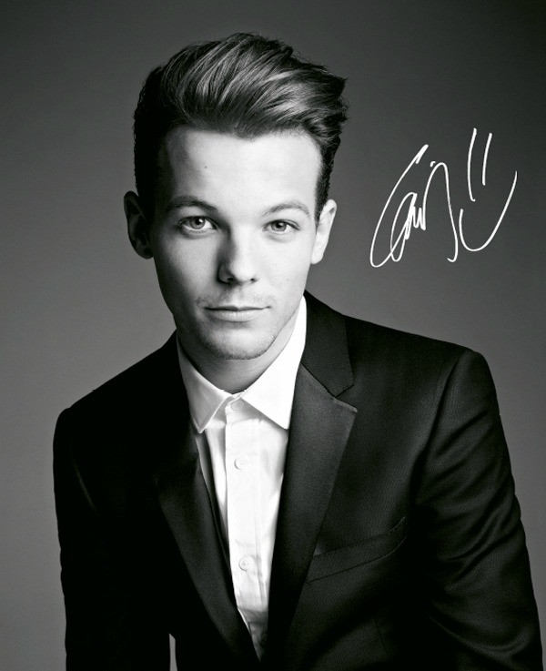

Members
Niall James Horan (born 13 September 1993 in Mullingar, Ireland) is an Irish singer and songwriter. He has an older brother, Greg Horan. His parents are Bobby Horan and Maura Gallagher. When he was a child he had asthma. He taught playing guitar by himself and then started singing, in fact on the stage he often accompagnied his voice and his bandmates playing guitar. He enjoyed playing sports, including (in particular) golf and soccer. He dislocated his knee during a tour with 1D, because of a floating kneecap. As solo artist he released two albums: Flicker (2017) and Heartbreak Weather (2020). His most famous songs are: Slow Hands, Nice to Meet Ya, No Judgement. "He loves life!" said his bandmates, in fact Niall laugh for everything, he always has a smile on his face.
Liam James Payne (born 28 August 1993 in Wolverhampton, England) is an English singer and songwriter. He is the son of Karen and Geoff Payne. He has two older sisters, Nicola and Ruth Payne. When he was a child, doctors noticed that his kidneys was scarred and dysfunctional. He first auditioned for The X-Factor in 2008, he failed, but was encouraged by Cowell, a judge, to "come back in two years". In 2016, Payne have one son, Bear Grey Payne, with Cheryl, his ex-girlfriend. They split in 2018. In August 2020 he announced his official engagement with Maya Henry, sooner or later they will get married. He wrote 2 albums as solo artist: First Time (2018) and LP1 (2019). Some of his songs are: Strip That Down feat. Quavo, For You feat. Rita Ora from the soundtrack of the film Fifty Shades Freed, Familiar feat. J Balvin.His bandmates identified him in the band like the smart and powerful one.
Zayn Javadd Malik (born 12 January 1993 in Bradford, England) is an English singer and songwriter. His father, Yaser Malik, is a British Pakistani; his mother, Tricia Brannan Malik, is from England. His older sister is called Doniya and two younger sisters are Waliyha and Safaa. In addiction to singing he is passionate about art: he likes drawing. If he hadn't become a singer, he would have wanted to be an English teacher. In March 2015 Zayn left the band and he start a solo career. Since then he released two albums: Mind of Mine (2016) and Icarus Falls (2018). Here are some of his best known songs: Pillowtalk, I Don't Wanna Live Forever feat. Taylor Swift, for the soundtrack of the film Fifty Shades Darker, Dusk Till Dawn feat. Sia, Entertainer, A Whole New World feat. Zhavia Ward for the soundtrack to the 2019 film remake Aladdin.He is known for his belting and falsetto singing techniques and hitting high notes with his vocals. In April 2020, Gigi Hadid, his girlfriend since late 2015 and also an American model, confirmed she was pregnant with Malik's child, a girl. In the Steal My Girl video clip, Zayn is described by the noun "Mystery".
Harry Edward Styles (born 1 February 1994 in Redditch, England) is an English singer, songwriter and actor. He's the son of Anne Cox and Desmond "Des" Styles. His older sister is called Gemma. Styles' parents divorced when he was seven and Anne later was remarried to Robin Twist, who died of cancer in 2017. At the age of 16, he worked in a bakery. In 2017 he acted in the film about World War II, called Dunkirk as a British soldier. As solo artist he released 2 albums: Harry Styles (2017) and Fine Line (2019). Some of the most famous songs are Sign of the Times, Two Ghosts, Sweet Creature, Ever Since New York , From the Dining Table , Golden, She, Lights Up, Adore You, Falling, Watermelon Sugar. Harry is a person who stand up for what he believe in and he's identified by the word "Love".
Louis William Tomlinson (born 24 December 1991, Doncaster, England) is an English singer and songwriter. His parents are Johannah "Jay" Poulston (who died after a short battle with leukaemia, in December 2016) and Troy Austin, who split up when he was a toddler. He later took on his then stepfather Mark Tomlinson's name. He has seven half siblings: Georgia Austin, Charlotte "Lottie" Tomlinson, Félicité Tomlinson (who died as a result of cardiac arrest), Daisy and Phoebe Tomlinson (2 twins), Ernest and Doris Deakin (2 twins). He played for the Doncaster Rovers, in fact he loves football. Louis later participated in bandmate Niall's Charity Football Challenge on 26 May 2014. In July 2015, it was reported that Tomlinson was expecting a baby with then 23-year-old stylist, Briana Jungwirth, Freddie Reign Tomlinson is the name of the child. In 2018 he participates again at The X-Factor, but as a judge. During his own solo career he released various songs, like Just Hold On feat. Steve Oaki, Back to You feat. Bebe Rexha and Digital Farm Animals, Just Like You, Miss You, and an album, Walls, which includes some songs like Two of Us, We Made It, Always You, Defenceless, Only The Brave. In the band he's the funniest, because he always makes jokes, in fact in the Steal My Girl videoclip he is identified as "Danger"!
